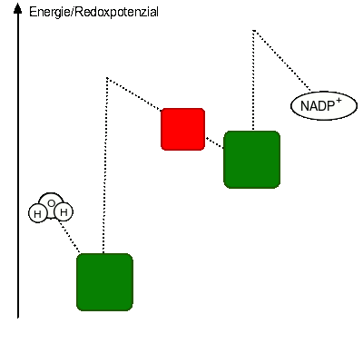

Fotosynthese
Lichtreaktion
Abb. 1: Membranvorgänge bei der Lichtreaktion (für zwei Wassermoleküle)
- Licht
trifft an der Thylakoidmembran
auf das Fotosystem Ⅱ, dieses wird angeregt.
- Ein Wassermolekül wird [im Thylakoid-Innenraum] am Fotosystem Ⅱ gespalten in
ein einzelnes Sauerstoffatom,
zwei Elektronen und
zwei Protonen.
Nach der Spaltung des zweiten Wassermoleküls bilden die beiden entstandenen Sauerstoffatome
ein Sauerstoffmolekül.
- Die beiden Protonen entstehen im Thylakoid-Innenraum, so dass dieser sauer wird [pH < 7].
- Die beiden Elektronen werden über verschiedene
Redoxproteine zum
Fotosystem Ⅰ transportiert.
An den
Redoxproteinen
werden noch zusätzliche
Protonen in den Thylakoid-Innenraum
gepumpt, so dass dieser noch stärker sauer wird [hier nicht dargestellt].
- Die Protonen diffundieren entlang des Konzentrationsgefälles
zurück ins Stroma und treiben dabei an dem Enzym ATP-Synthetase
die Bildung des Universalenergieträgers ATP aus den energieärmeren Vorstufen
ADP und Pi an.
Dabei werden pro gespaltenem Wassermolekül ein NADPH₂⁺-Molekül und ca. 1,5 ATP-Moleküle gewonnen.
(Insgesamt bei 12 Wassermolekülen also entsprechend 12 NADPH₂⁺ und 18 ATP)
- Licht
trifft auf das Fotosystem Ⅰ, dieses wird angeregt.
- Die beiden Elektronen und
die beiden Protonen
(insgesamt also formal ein H₂-Molekül)
werden auf ein
NADP⁺ Molekül übertragen, das somit zu
NADPH₂⁺ reduziert wird.

Abb. 2: Z-Schema bei der Lichtreaktion (nur für ein Wassermolekül)
[beachte, dass hier ein höherer Energiegehalt einem negativeren Redoxpotenzial, also einem stärkeren Reduktionsmittel entspricht!]
- Ein Wassermolekül wird am Fotosystem Ⅱ gespalten.
- Die beiden Elektronen werden auf das im Gundzustand schwache Reduktionsmittel
Fotosystem Ⅱ übertragen.
- Licht regt das Fotosystem Ⅱ an, so dass es zu
einen stärkeren Reduktionsmittel als das Fotosystem Ⅰ im Grundzustand wird.
- Die beiden Elektronen werden vom angeregten Fotosystem Ⅱ
über mehrere Redoxproteine zum Fotosystem Ⅰ übertragen,
das sich im Grundzustand befindet.
- Licht regt das Fotosystem Ⅰ an, so dass es zu
einen stärkeren Reduktionsmittel als das NADP⁺ Molekül wird.
- Die beiden Elektronen werden vom angeregten Fotosystem Ⅰ
auf das NADP⁺ Molekül übertragen, das somit zu
NADPH₂⁺ reduziert wird.
Externe Links
Lichtreaktion
Lichtreaktion
Lichtreaktion